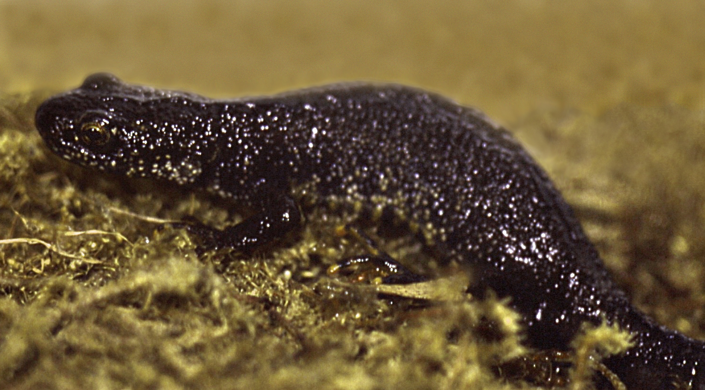

(Triturus Cristatus)
Traszka Grzebieniasta to płaz o długim, smukłym ciele, osiągającym długość od 15 do 18 cm. Jej skóra jest
gruboziarnista i może mieć odcienie czarnego lub brązowego z czarnymi plamami. Strona brzuszna jest
pomarańczowa lub żółta z czarnymi plamami. Samce i samice poza okresem godowym są podobne.
Ciekawostka:
Samce Traszki Grzebieniastej w okresie godowym wykształcają charakterystyczny grzebień na grzbiecie.
Dodatkowo, ich palce stóp są pokryte prążkami czarnymi i żółtymi, co nadaje im unikalnego wyglądu.
Traszka Grzebieniasta to gatunek, który może prowadzić zarówno wodny, jak i lądowy tryb życia. Zasiedla różnorodne siedliska, zwłaszcza niezarybione zbiorniki czystej wody stojącej o gęstej roślinności, a także pobliskie lasy. Jest aktywna zarówno w dzień, jak i w nocy.
Traszka Grzebieniasta ma unikalny proces rozmnażania. Samiec wykonuje taniec godowy, po czym przekazuje wybrance spermatofor. Samica składa jaja, zawijając je w liście roślin wodnych. Z jaj wylęgają się kijanki, które polują w toni wodnej, a następnie przechodzą proces przeobrażenia.
Traszka Grzebieniasta jest gatunkiem ziemno-wodnym, który występuje prawie w całej Polsce, głównie na terenach nizinnych, do 700m n.p.m. Preferuje wilgotne środowiska, takie jak lasy liściaste z gęstym podszyciem, tereny o wilgotnym podłożu porośnięte trawą i krzewami, wilgotne łąki, torfowiska, zacienione parki. W Polsce, Traszka Grzebieniasta znajduje się pod ścisłą ochroną.
Mimo że Traszka Grzebieniasta jest gatunkiem szeroko rozpowszechnionym, jej populacje są zagrożone. Głównym zagrożeniem jest utrata siedlisk związana z przekształcaniem środowiska naturalnego. W celu ochrony tego gatunku podejmowane są różnorodne działania, a w wielu krajach jest objęty ochroną prawną.